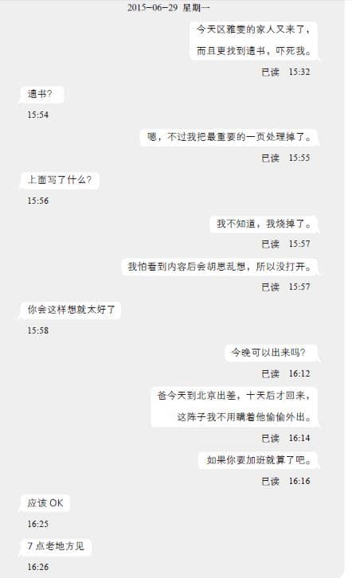

第六章
1
施仲南站在旺角上海街朗豪坊旁的街角，心里既惊且喜，同时有一点担忧，害他不时四处张望，留意街上的人群。
时间是傍晚6点45分，日期是6月25日，星期四，亦即是施仲南在文化中心“偶遇”司徒玮的五天后。自从上次获得这位SIQ董事的手机号码，施仲南便不时留意手机，生怕错过对方来电，然而等了多天，司徒玮并没有打电话给他，也没有传过半条短信。头两天施仲南仍能按捺住，猜想司徒玮待有空才找他，可是等了四天，音信全无，他便愈来愈心急，连马仔也察觉他神色有异。他想过主动致电对方，毕竟司徒玮亲口说过相约见面，亦似乎想打听GT网的内部事情，可是对方是“人上之人”，施仲南始终有点顾虑，不敢贸然按下通信录中那串数字。
就在他仍在踌躇着该不该打电话时，司徒玮却忽然找他。看到来电号码后，施仲南匆匆忙忙装作上洗手间，离开办公室众人视线范围，紧张地按下接听的绿色按钮。
“阿南？我是司徒玮。”手机传来司徒玮那种略微带着外国人口音的广东话。
“司徒先生，您好！”
“上次提过一起吃晚饭，今天晚上你有空吗？”
施仲南稍稍怔住。他瞧了瞧手表，时间是下午4点半。
“嗯，嗯，有空，有空。”虽然施仲南晚上有约，可是他很清楚轻重缓急，知道哪一边更重要。
“好，那我们今晚7点见吧！到尖沙咀吃杭州菜如何？”
“啊……杭州菜很好，不过我怕我会迟到，我6点半才下班，那时段交通繁忙，很难叫计程车，地铁又挤，搞不好要等两三班才能搭上。”
“你没开车？”
“我没车，在香港养车不便宜。”施仲南苦笑道。他光是房租已耗上六成薪金，买车的话，停车场的租金恐怕要花掉那余下的四成。
“那我来你公司附近接你吧。6点45分，朗豪坊酒店侧门，上海街那边OK吗？”
“啊，不用劳烦司徒先生您……”
“反正我现在到九龙塘创新中心赴约，离开时往尖沙咀正顺路，不麻烦。6点45分见啰。”
就像西方人的爽朗作风，司徒玮没让施仲南回绝便挂了线。
虽然施仲南对司徒玮没架子的作风甚有好感，但他可不是因为客气才想拒绝对方顺道接载他的提议。他关心的只是自己——万一被同事撞破，发现他跟公司的潜在投资者私下接触，他在公司里的地位便岌岌可危，到时别说出人头地，搞不好要直接卷铺盖，加入失业大军。在网路上他能够轻松隐藏身份，可是现实中却无法使用假名或戴上面具来保护自己。
为了减少被识破的机会，施仲南特意待到6点40分才离开公司，急步从公司所在的山东街和广东道交界走到朗豪坊。他离开时，马仔、阿豪和Thomas仍在加班，他要提防的只有李老板和Joanne——他们在6点前先后下班，施仲南估计，二人刻意分开走，欲盖弥彰，九成是去“幽会”。施仲南想，假如李老板真的和Joanne有约，为了避开同事耳目，他们应该不会在旺角逗留。即使公司各人出现在朗豪坊附近的机会很微，施仲南仍不敢掉以轻心，不时察看街头街尾有没有熟悉的面孔。
当然，伴随着紧张的心情，他更感到兴奋。
施仲南年幼时曾被祖父母带给相士批命，对方说他的八字显示他“非池中物”，将来必有一番成就。所以，纵使他求学时期受过不少白眼，他都坚信自己比别人优秀，成绩名列前茅之余，他更自诩头脑非凡，善于察言观色。他隐隐感觉到，司徒玮对他的态度跟对李老板的不一样。到底有什么不同他倒说不出来，只是觉得谈吐举止之间，司徒玮似乎尝试拉拢自己。
每想到这儿，施仲南都不明所以。一个是身价数十亿美元的国际级精英，一个是寒酸小公司的挂名技术总监，自己何德何能，值得对方拉拢？
就在他一边察看四周、一边思考着司徒玮的态度时，一辆黑色轿车在他身旁停下来。
“嗨，等了很久吗？”从车厢后座的窗子探头出来的，正是司徒玮。
施仲南立时回过神，可是看到车子的瞬间，他心里顿时冒出一声惊叹。考获驾照多年的施仲南虽然没有车子，但一如不少香港男性一样，对拥有一辆名车甚为憧憬。豪宅、名车、醇酒、美人，这些都是香港社会典型成功男士的证明。施仲南没钱买名车，却钟爱观看跟汽车有关的网站和电视节目，英国BBC制作的《Top Gear》他从没错过半集。当司徒玮说要来接他，他就猜想对方开什么车子，既然对方是跨国企业董事级数的人物，来港至少租宾士或奥迪才配合身份。可是，施仲南眼前的不是这种名车，亦不是讲究气派的劳斯莱斯或尽出风头的法拉利，而是更切合司徒玮科技精英身份的特斯拉S型。
特斯拉是美国开发的纯电动轿车，完全不用汽油，引擎由锂电池组驱动，被称为未来的主流环保汽车。特斯拉S型是该公司的高级车款，虽然性能、外观、内饰未必及得上其他名厂出品，它的价钱却有过之而无不及，最便宜的版本也要六十万港币，假如换上大容量的电池，以及加上一堆悬挂系统或自动导航组件等，车价动辄过百万。
“怎么愣住了？”司徒玮笑道。车门打开，施仲南连忙点头致谢，走进车厢。他甫坐下，向前一看，他不是先留意到特斯拉S型那著名的“像平板电脑可以浏览网路的巨型驾驶仪表板”，而是发觉坐在司机席负责开车的是混血美女助理Doris。
“车里有什么不对劲吗？”司徒玮跟施仲南握手，笑着问。
“没、没有，只是我第一次坐特斯拉。”施仲南也不顾举动失礼，像走进玩具店的孩子般，四处打量着车厢各处。
“这款不错，马力可比跑车，加上四轮驱动，稳定可靠……不过在香港，加速度再高也无用武之地，毕竟城市道路限速，没得发挥。”司徒玮笑道，“阿南，你是车迷？”
“嗯，虽然无法拥有，但也可以看看杂志照片过过干瘾。”
“嘿。”
在接下来的十数分钟路程中，司徒玮跟施仲南聊汽车经，从各大车厂历史到产品的性价比都有谈论。施仲南觉得，美国人果然是“汽车民族”，假如说古时武士都会物色骏马当坐骑，汽车就是今天美国人的良驹了。
“可惜香港地狭人多，不像美国汽车那么普及。”施仲南说。
“没车的人生太无趣了。”司徒玮摊摊手，像为自己的美国人身份感到自豪，“从汽车可以看出车主的个性，就像衣服一样，让人了解你的品位。”
“可是香港人只能通过手机显出这种个性。”施仲南笑道，“买不了车，便疯狂换手机，就像衣服换季似的。”
“嘿，这倒是。香港人口约七百万，手机用户却有一千七百万以上，即是平均每人有多于两支手机，这数字冠绝全球。香港人换手机的频密程度，就跟美国爱车人士换车的速度差不多……”司徒玮顿了顿，再说，“不，我想应该比美国的车迷更疯狂。”
“呵，换手机便宜得多嘛。”
“也对。”司徒玮转头瞧看车窗外的景色，若有所思地说，“不过不管花多少，只要有消费，这个世界的经济才得以存续，我们这些投资者才能制造财富。”
施仲南依循司徒玮的视线望向尖沙咀广东道上林立的名店，以及街上那些衣着光鲜、满身阔气的顾客。他一向觉得尖沙咀就像香港的缩影：这个社会，认钱不认人。不管你的财富是辛苦累积而来，抑或是巧取豪夺凭着剥削他人而赚取，只要有钱就能获得他人敬重。就算你不同意这种势利的社会法则，在这个城市生存，你也必须服从于这规条。
“不想成为被剥削的一群，就只有成为剥削他人的阶层”——施仲南想起不久前阿豪说过的这句话。
轿车驶进北京道，在iSquare国际广场对面停车。施仲南跟随司徒玮下车后，Doris便开车往汉口道驶去。
“她不跟我们一起吃饭吗？”施仲南稍稍犹豫后，问道。
“又不是公务，Doris当然不用老跟着我们。”司徒玮笑着反问，“还是说，比起跟我吃饭，你更想跟她约会？”
“不、不，当然不是。”
“就算是也没有什么不对啊。”司徒玮朗声笑道，“Doris是美女，哪有正常男人不动心？”
“司徒先生……您跟她……”施仲南欲言又止，不知道问这个问题会不会太唐突。
“没有，她只是我的助理而已。”司徒玮亮出不在意的表情，说，“中国人不是有一句俗语吗？‘兔子不吃窝边草’。她在工作上能干，我就不想令我们的关系受损，影响她的效率。反正我认识不少比她更标致更性感的女人，而且她们跟我的工作毫无瓜葛，不会妨碍我的事业。”
施仲南不由得想起李老板和Joanne——他猜，这种气度的差异，断定了李老板一辈子也不可能成为下一位司徒玮吧。
二人走进iSquare商场，往电梯的方向走去。当司徒玮按下电梯的三十一楼按钮，施仲南愣了一愣。iSquare国际广场是栋综合式商场大厦，有服饰店、电器行、精品店、银行、各式餐厅和一家配备IMAX系统的戏院，而二十楼以上都是高级餐厅，层数愈高档次也愈高。一千多二千港币一顿晚餐，可不是施仲南这种受薪阶级吃得起。
“今晚我做东，别跟我争。”司徒玮似是看穿施仲南的心事，轻描淡写地说。
“啊，谢、谢谢。”施仲南想过说点门面话，可是他的钱包不争气，万一司徒玮同意让他请客就自找麻烦，所以只好爽快地接受——天晓得待会儿吃的是什么山珍海错？
电梯门打开，映进施仲南眼帘的是以米黄色云石为主、装饰糅合中式与西式的高级中菜馆门面。墙上刻着“天鼎轩”的招牌，站在柜台后的是一位身穿紫色贴身制服的女接待员。那年纪二十余岁的接待员身材不输模特儿，脸蛋更是姣好，不难想象这家天鼎轩让她担当接待工作的理由。
“晚安，司徒先生。这边，请。”
女接待员甫看到司徒玮便主动打招呼，毕恭毕敬地领他和施仲南走进餐厅。施仲南没到过这种高级菜馆，不过他猜，女接待员连顾客名字都不用确认，大抵司徒玮之前已光顾过不止一次，是餐厅的贵宾。
当接待员带他们到座位时，施仲南更确定自己的猜想没错。
他们被带到一间独立的厢房，房间有两面落地窗户，可以眺望维多利亚港东面的景色。厢房不算大，大约能够容纳一张十二人圆桌，可是如今只有一张放了两套餐具的方桌子。施仲南相信这是天鼎轩的VIP房，房门旁边站着另一位穿相同紫色制服、外表同样俏丽的女服务员。
施仲南这时暗暗庆幸自己有穿西装、结领带，假如只像往日一样只穿一件衬衫，未免太失礼。自从司徒玮到过公司参观后，李老板下令各人每天要穿“合适的服装”上班，说“专业团队该有专业形象”云云。施仲南猜，老板大概担心司徒玮突击访问，会发现众人“不专业”的真相。
司徒玮伸手示意，请施仲南坐下，自己再坐到离厢房入口较远的座位。
“这房间的灯光很讲究。”司徒玮对施仲南说，“即使这儿灯火通明，我们仍能通过玻璃欣赏香港的城市夜景，不会被室内的光线影响，这设计师很用心。”
施仲南闻言远眺窗外，刚刚西沉的太阳正散发余晖，为维港两岸的摩天大楼披上一袭红衣。街上五光十色的霓虹灯逐渐亮起，似为这个城市的晚间舞台展开序幕。施仲南曾经听说过，日本江户时代的将军坐镇城楼，高高在上地眺望万家灯火，也许现代人不过是在复制那份虚荣感，让有钱人产生自己睥睨天下的错觉。
接待员离开房间后，服务生上前向司徒玮递上菜单，可是司徒玮没接，向施仲南问道：“你有没有什么东西不吃的？例如海鲜？”
“没有。”施仲南摇摇头。
“那就好。”司徒玮回头对服务生说，“两客御鼎套餐。”
服务生微笑着点头，收回菜单，礼貌地离开厢房。她步出门口，便有另一位长发女服务生进来，不过这位服务生穿的不是紫色制服，而是结领带的黑色西式套装。
“司徒先生，今晚想点什么酒？”她边说边向司徒玮递上酒单。
“嗯……”司徒玮托了托眼镜，目光扫过酒单上的文字，“Buccella Cabernet Sauvignon 2012。”
“Buccella Cabernet Sauvignon 2012，好的。”
施仲南猜想这位大概是侍酒师。对方重复了司徒玮的选择，看到司徒玮略微颔首，便微笑着离开房间。
“阿南，你不会不喝红酒吧？”司徒玮一副猛然想起的样子，对施仲南问道。
“喝，当然喝……不过我对红酒认识不多，更没试过中菜配红酒。”
“我以为香港的婚宴都是中菜配红酒呢。”司徒玮说，“那你一定要好好尝一下，布凯勒酒庄的卡本内苏维翁品质不输欧洲任何同等级的葡萄酒，我诚意推荐。”
“不输欧洲？这酒不是法国产的吗？”施仲南本来猜，资产值超过数十亿的司徒玮喝的红酒一定是法国波尔多的。
“不，美国的。布凯勒酒庄在纳帕谷，跟硅谷一样位于加州。我和井上创办同位素科技初期，办过几次到纳帕谷的员工旅游，反正车程不用两个钟头，十分方便。阿南，你到过加州吗？”
“别说加州，我连美洲也没去过。我最远只去过日本罢了。”
“那你有机会一定要去一下……”
就在司徒玮介绍加州名胜景点之际，侍酒师推门进来，手上捧着一个深色的瓶子，瓶身贴着一个白色的椭圆形标签，上面以美术字体写着阿拉伯数字“2012”，标签顶部附着一个红色的火漆印，整体给人一种简约的感觉。
“Buccella Cabernet Sauvignon 2012。”
侍酒师再次重复酒名，并让司徒玮检查标签。司徒玮瞧了瞧，点点头，侍酒师便退往餐桌旁的侧桌，掏出开瓶器，仔细地拔出瓶塞。她往司徒玮的酒杯斟了小半杯，司徒玮便轻轻举起酒杯，朝灯光瞧了瞧那紫红色的液体，往杯口用鼻子嗅了嗅，再浅浅尝一口。
“嗯。”司徒玮点点头，侍酒师便替施仲南斟了半杯，然后再为司徒玮的杯子添至半满。
施仲南没见过这种喝红酒的正式礼仪，平日只会到超市买回家再大口大口地灌下肚。他心想幸好这回是吃中菜，中菜配红酒本来就不成正统，大概没有什么特定的礼节，假如今晚吃的是法国菜，他一定狼狈不堪，甚至让司徒玮对自己留下坏印象。
“来，试一下。我一直觉得这酒跟杭州菜很配，加州产的比欧洲的酸度较低，而且它独特的酱果香气不会喧宾夺主，影响菜肴的风味……”
施仲南尝了一口，可是他不知道如何形容——因为他根本不知道法国产的味道如何。当然，他再不懂也尝得出这酒香醇可口，理解司徒玮钟情它的部分理由。
当司徒玮滔滔不绝地谈论红酒知识时，穿紫色制服的服务员捧着银盘子走进厢房，替两人上菜。
“杭州龙井虾仁。”
施仲南本来以为吃中菜都是大盘大盘地让各人分吃，没料到服务生端上的，却像法国料理般每人一份，小盘子上的虾仁晶莹剔透，装饰菜摆盘更是美轮美奂，教人食指大动。
继龙井虾仁后，一盘盘精致美味的料理逐一送上餐桌。像蜜汁火方、干炸响铃、西湖醋鱼、东坡肉之类的传统杭州菜固然没有缺席，跟杭州关系不大的鲍鱼、海参、花胶等珍贵海味，也以别树一帜的方式烹调呈上，佐以黑松露、芦笋等西式食材，颇有新派融合料理的风范。每盘美食分量不多，可是款色层出不穷，令施仲南想起日式的怀石料理，当然，观乎上菜次序和盘饰手法，这顿饭更像西餐。
在进餐过程中，司徒玮爽朗健谈，可是话题只集中在三个范畴：食物、汽车和旅游。施仲南很想知道几天前对方那句“你是聪明人”的背后意义，不过他一直忍耐着，完全没有谈及GT网或SIQ投资等。他了解到一旦主动提起工作上的事情，便很容易暴露他意欲巴结的目的，为了不让自己处于下风，他只能等待对方先说，到时再顺水推舟，见步走步。
结果遂其所愿，司徒玮终于主动提起在文化中心相遇一事；可是，对方的话却超出施仲南的想象。
“阿南，你根本没有热爱古典乐的朋友吧。”吃罢以燕窝制作的凉糕甜点，司徒玮边喝红酒边说。
“嗯？”施仲南以为自己听错，稍稍怔住。
“我说，你星期六那天其实是独个儿到文化中心，而且你去那儿的目的不是为了听演奏会。”司徒玮摇着酒杯，语调平淡地说。
施仲南没想到对方一语道破自己的心事，心脏一下子乱跳，他几乎以为心跳声响亮到坐在餐桌对面的司徒玮也能听见。为了压下内心的慌张，他打算坚持之前的相遇纯粹巧合——可是他刚要开口，便隐约察觉这不是“正确”的答案。
“嗯……是的，我是特意到文化中心找您的。”施仲南把心一横，直白地回答道。
“很好。”司徒玮满意地笑了一下，说，“你的判断很正确。重要的是，你知道什么时候该隐瞒，什么时候该坦白。商场上谎言和手段司空见惯，我从不介怀，只是，明知对方知道自己的底牌还硬要撒谎，那便是一种侮辱了。”
司徒玮的回答令施仲南放下心头大石。
“那我再问你，”司徒玮放下酒杯，“‘把G币和消息买卖包装成金融产品’的说法不过是你临时胡扯，事实上你们公司没有这计划吧？”
“……是的。”施仲南点点头。
“阿南，你爱看足球吗？我说的是soccer，不是美式足球。”
施仲南不知道为什么司徒玮突然改变话题。“不常看，但间中有留意欧洲的联赛。”他回答。
“不是说十个香港人中九个爱看足球吗？”司徒玮笑道，“那你知不知道一流的前锋和普通的前锋有什么差异？”
施仲南不知道对方这问题的用意，所以摇摇头。
“是把握机会的能力。”司徒玮说，“举例说，A队的前锋十次射门才有一次成功，B队前锋只要五次便能制造一次入球，那在一场队友制造了七次射门机会的比赛中，前者顶多和对手赛和零比零，而后者至少有机会赢一比零。这个比喻可能过度简单化，但我想说的重点是，一流的人才能在短时间认清情势，分析利弊，然后把握机会，争取最大的利益。一名前锋可能在某场比赛突然走运，连进五六球，但真正的人才能够在联赛中每场比赛都稳定发挥，无时无刻抓住任何进球机会。精明的教练只会选后者当正选球员。”
司徒玮顿了一顿，轻轻用食指指了指施仲南，说：“你们公司里，只有你具备这种把握力。”
“过、过奖了。”
“当我故意找碴，质疑你们公司的经营模式能否获利时，你们老板Richard半句话也答不上来，不但毫无急智，就连基本的应变能力也欠缺。你的其他同僚亦碍于华人传统观念中的主从关系，不敢自作主张贸然代上司解围，宁愿少做少错，就只有你当机立断，明白当时最重要的是抓住我这尾大鱼，不惜瞎掰毫无根据的点子，甚至装模作样说什么‘商业机密’来挽回我对你们公司的兴趣。”
施仲南此刻才知道，原来司徒玮当时并非真的对GT网有意见，而是存心刁难，以此试探。
“你那胸有成竹的姿态很成功，我几乎上当了。”司徒玮继续说，“假如Richard没有把心底话都写到脸上，我真的以为你们在设计什么‘消息期货’的荒唐玩意。老实说，这点子蛮蠢的，八卦消息不是实物，它可以无限量复制，没有供求关系，当成货物来玩杠杆式投资交易会成功才怪。不过天底下存在更荒谬的金融产品，例如信贷违约掉期就像赌局甚至骗局，可是它是企业间的有效财金工具，而且加上华丽的包装，你还可以将它卖给平民百姓……当然，2008年后，这些平民便知道真相了。”
2008年投资银行雷曼兄弟因为次贷危机而破产，其后揭发他们将信贷违约掉期包装成债券让合作的香港地区、台湾地区和新加坡银行向一般客户推销，导致那些客户的财产化为乌有。
施仲南差点想告诉对方，他和阿豪目前在李老板指示下努力将这个“荒唐点子”凑合起来，日夜赶工，准备半个月后再次呈交给司徒玮过目。他自己很清楚，什么“消息期货”只是胡诌，要将它具体实现、写成合理的报告，大概是天方夜谭。这几天他和阿豪都在烦恼如何收拾这烂摊子，愈深入设计便愈觉得这真是馊主意。
“撇开那个胡来的点子不谈，你当天的表现可说是九十分以上。”司徒玮笑着说，“于是我做了第二个试探，而你也不负所望，合格了。”
“第二个试探？”施仲南反问。
“你以为我为什么特意在你们面前聊古典音乐、透露星期六听演奏会的行程？”
施仲南猛然醒觉，一切都是司徒玮的设计。他本来为自己成功堵截司徒玮而沾沾自喜，如今才发现这在对方计算之内。
“这一顿饭，便是我送你的贺礼。”司徒玮举起酒杯，“每次我遇上兼具决断力、行动力和把握力的人才，我都会请对方好好吃一顿饭，喝一瓶好酒，这些人才当中，不少成为SIQ的重要合作伙伴。”
就像押中马票一样，施仲南心里顿时冒起一份满足感，内心不断高声呐喊。即使对方没有明确承诺什么，他也相信，自己已经走对了路，成功巴结这位科技界名人。
“不过，你也别太兴奋。”司徒玮没等施仲南回话，继续说，“我习惯依据表现而决定花多少钱在这‘贺礼’上，这瓶卡本内苏维翁不过在二百美元价位，过去我曾为一位年轻人开了一瓶一千块的。假如你没有说什么鬼‘期货’‘认股证’，想到一些实行性更高的点子，那我们现在可能在ICC的一百楼餐厅了。”
ICC全名环球贸易广场，位于西九龙柯士甸，是全港最高的摩天楼，楼高一百一十八层。一百楼以上有六星级酒店及高级餐厅，消费自然不便宜。
施仲南有点后悔当初没想到比金融产品更好的主意，不过这心情一闪即逝。只要抓住眼前的机会，他日别说到ICC吃饭，就连买下迪拜哈利法塔高层办公室也不是梦。
“司徒先生，您怎么确认我不是真的到文化中心听演奏会，跟您偶然相遇？”施仲南问道。
“今天我们碰面后，您半句关于音乐的话题都没提，假如你真的想装到底，至少吃饭时找机会聊一下吧。”司徒玮吃吃地笑，“你还想知道什么？尽管发问。”
“SIQ为什么看中我们公司？”施仲南问，“如果您真的认为GT网的经营模式无法赚钱，那SIQ没理由有兴趣投资，即使我表现再好，也于事无补。”
“你知道什么是‘梅特卡夫定律’吗？”
“好像是跟网路有关的？”
“对。‘梅特卡夫定律’指出，一个网路的价值，跟用户数的平方成正比。即是说，拥有五十个客户的网路，比拥有十个客户的，价值高出二十五倍，而不是五倍。这道理应用在网路服务上，便说明了为什么大企业不断并购类型相同的小公司，有五十个用户的服务吃下只有十个用户的，用户数目虽然只增加了百分之二十，价值却增加约五成。”
“这和GT网有什么关系？”
“你还没听出来吗？”司徒玮露出一个意味深长的微笑。
施仲南灵光一闪，想到答案。
“SIQ在美国投资了类似的企业？”
“答对。”司徒玮直视着施仲南双眼，说，“详情我不说太多，但你们公司的‘消息买卖’机制跟我们另一项重点投资项目十分相似。我们预计它会发展成另一个Tumblr或Snapchat，所以我们先下手为强，趁早插手全球各地类似的小企业。”
“就像Groupon吃掉uBuyiBuy？”
“正是。”
2010年初，有两位香港年轻人看中团购网站服务的潜力，推出名为“uBuyiBuy”的团购网，结果半年后公司便被全球最大的美国团购服务企业Groupon收购。当时Groupon正进军亚洲，一口气买下香港地区、台湾地区和新加坡的同类公司，大幅扩充业务。
“你还有什么问题？”
“嗯……SIQ是不是要在香港开分公司？”
施仲南的问题，令司徒玮稍稍怔住。
“为什么你会有这想法？”
“因为刚才我们坐的是特斯拉。”施仲南答，“司徒先生您说您来港度假，按道理在香港该租车，可是特斯拉这款电动车并不热门，香港的租车行没有出租。假如这是您问香港朋友借来的，您在言谈间应该会透露，可是您对那台车子的说法，就像是自己拥有的。您家在美国，但在香港却有自己的汽车，我唯一想到的可能性，便是SIQ即将在香港开设分部，那辆特斯拉S型是公司名下的资产。说不定您今天到九龙塘创新中心，就是代表SIQ跟相熟企业打招呼吧。”
“看来我做错了——”司徒玮轻轻敲了一下桌上的酒瓶，“我该开一瓶五百元的。”
施仲南听到这句委婉的称赞，心里连声叫好。
“SIQ准备进军中国，所以先在香港设立子公司，当作亚洲总部。”司徒玮直认不讳，“中国有不少新创公司，创业者都很年轻，想法不输欧美的人才。中国近年经济增长放缓，SIQ便更想抓住机会，投入资金，从中国发掘有潜力的新兴科创企业……不过我这趟来港真的不是为了这件事。SIQ今天的掌舵人是凯尔，我只偶尔当一下说客或‘猎头人’。”
在今天的会面之前，施仲南有仔细阅读背诵SIQ的资料，所以他知道司徒玮所言非虚。他在YouTube找到不少SIQ的访问与记者会影片，可是受访的和主持会议的，全都是五十来岁、留八字胡的凯尔·昆西。
“既然SIQ进军中国，司徒先生应该会走出台前，担任亚洲区的旗手吧？”施仲南说，“我猜身为西方人的昆西先生在欧美会较具亲和力，但在亚洲，黑头发黄皮肤的执行长应该让人觉得更易于沟通？”
“你说得对，不过我不打算复出了。”司徒玮耸耸肩，“我对目前的生活十分满意，周游列国，享受美酒佳肴，无须为投资成败费心，顶多偶然动动眼光，替公司出点主意。要我一下子再跃到大前线冲锋陷阵，我吃不消。凯尔已经开始物色亚洲区的执行长人选了。”
“那井上先生呢？”SIQ的三位创办人里便有两张亚洲脸孔，施仲南觉得不动用这先天优势有点笨。
“嘿！”司徒玮朗声大笑，说，“井上那家伙啊，天晓得他现在人在哪儿，在干什么好事。”
“咦？”施仲南呆住，问道，“井上聪先生不是SIQ的董事之一吗？”
“他在SIQ只有虚衔罢了，他已缺席董事会会议多年，对SIQ的发展漠不关心。这家伙是个天才，可是对企业行政毫无兴趣，个性乖僻，宁愿躲起来做研究。我已有好几年没见过他，而且也没有他的联络方法，不过若董事会要找他，他却能够抢先用电子邮件之类的方式联络我们，就像一直紧贴公司动向似的。我有时怀疑，他是不是黑进了公司的系统，监视着我们所有人的活动……”
“他有这么厉害？”
“他不厉害，同位素又如何凭一堆专利发迹？”司徒玮失笑地说。
“发明专利是一回事，黑进系统是另一回事啊。”
“你听过Kevin Mitnick这个人吗？”
施仲南摇头。
“凯文·米特尼克目前在美国经营一家电脑保安咨询公司，替企业测试系统，检查有没有漏洞让黑客有机可乘，在业界颇负盛名。”司徒玮举起右手食指，像在空气中划下一条时间轴，“可是，在2000年以前他是最恶名昭彰的黑客，曾是美国电脑罪案的头号通缉犯，全球不少企业与政府系统都被他闯进过，盗取了不少机密资料。”
“哈，您就像在说井上先生也是……咦？”施仲南话到一半才察觉对方话中有话，连忙住口。
“我可没有说过任何事情喔。”司徒玮打了个眼色。
施仲南没再深究下去，毕竟他知道，有些事情可不能放在台面上讲。他想起他在网路上读过的资料，说井上聪曾参与制订好些网路安全协定，假如说井上本身有电脑入侵的知识和经验，实在不足为奇。
“还是别提那家伙吧。”司徒玮说，“你还有什么问题想问我？”
施仲南正想开口卖弄一下，说自己也懂得好些黑客技巧，有入侵某些系统的经验，却发觉司徒玮三番四次要他发问，应该别有用心，很可能是“第三个试探”。于是他再仔细思索一下现时所知的一切，找寻那条“正确的问题”。不一会儿，他想到了。
“按照司徒先生的说法，”施仲南一脸谨慎，“因为SIQ在美国有投资类似我们GT网的项目，所以我们公司获SIQ注资可说是十拿九稳，对不对？”
“对。”
“那么，请问我如何为您们效劳？”
司徒玮闻言，亮出十分满意的笑容。施仲南从之前的对答，整理出最合理的结论：既然SIQ注资GT网是板上钉钉的事实——反正对SIQ来说，一二千万港币不过是九牛一毛的小数目——那么司徒玮要求他们弄什么新报告不过是门面工夫，亦不需要从自己身上打听什么内部消息。可是司徒玮主动约自己吃饭，那就代表自己对SIQ这次的案子有某些价值。
“SIQ入股你们公司后，Richard自然会继续当执行长——”施仲南听到司徒玮以“执行长”这种正式职称来称呼李老板，差点忍不住笑意，“可是我们无法确认他能否配合母公司的发展，准确执行给予他的任务。我需要一个具备观察力和应变力的员工，适时汇报进度，让我们了解公司的运作是否顺利。”
“即是说，要我当‘线民’？”施仲南笑道。
“这说法太负面了。叫‘非正式内部观察员’较动听。”司徒玮也回报一个笑容。
“往后谨遵阁下吩咐。”施仲南站起身，伸出右手。司徒玮亦站起来，跟对方握手，象征达成协议。
二人之后边喝酒边闲谈，话题同样离不开美食和汽车，可是施仲南此刻的心情跟一个钟头前迥然不同。他知道他一直以来等待的机遇已经出现，他的计划正朝着落实执行的方向迈进。
“差不多该回去了。”司徒玮瞄了瞄手表，说道。时间已是晚上9点半，“本来我想跟你去酒吧续摊，可是我明天早上有约，还是作罢。”
施仲南略微失望，不过他晓得自己无须心急，因为他已拿到SIQ的入场券。“您回美国前我们还有机会私下吃饭吗？”施仲南问道。
“我们之后再联络吧，反正我有你的号码。”司徒玮扬了扬手上的BlackBerry手机。
“叩、叩。”厢房的门传来敲门声。自从上过最后一道菜后，厢房的门便关上，服务生也没有进来，施仲南猜，这一定是高级菜馆让贵宾们有一个私密的环境谈公事的惯常做法。
“啊，Doris你来接我了。”
从门外走进来的，不是服务生或侍酒师，而是司徒玮的女助手Doris。Doris没作声，只默默地站在门旁，听候上司差遣。
“阿南，你住哪儿？”司徒玮问。
“我家在钻石山。”
“啊……本来我想说，如果你住港岛便顺道载你回家。”司徒玮摸了摸下巴，“我租住的公寓在湾仔。”
“不用司徒先生费心了，我搭地铁就好，很方便。”iSquare地库便有尖沙咀站的入口。
“那好极了。”
三人离开菜馆，步出门口时，穿紫色制服的服务生们和穿西装的经理还恭敬地送行。施仲南本来想问为什么不用结账，但他看到Doris便明白，她一定在接老板前已经打点妥当。
施仲南跟他们分手后，踏着雀跃的脚步，通过车站的票闸，走进列车车厢。虽然过了繁忙时间，列车上有不少空位，他仍一如平日选择站立，倚在车门旁边。他从公事包取出手机，打开电源，按下指纹解锁，简单回复了用餐时错过的讯息，再思考如何趁司徒玮留港期间进一步拉近他们之间的关系。
他觉得这一晚简直完美，没有事情可以破坏他的好心情。
然而他错了。
他一边回味这晚的奇遇，一边漫无目的地瞄向车厢两端，在望向车尾的方向时，一个坐在车卡中央右侧的男人令他觉得不对劲。他瞥了第二眼后，内心从困惑变成不安。
他见过那个男人。
三个钟头前，即是他在上海街等待司徒玮的时候，他因为害怕行踪曝光、被同事或李老板知悉，所以不时张望四周。他认得车上的那男人，对方当时站在街角一家卖鸡蛋仔小食的店门外，拿着报纸貌似等朋友的样子，跟自己相距不到十米，和现在的距离差不多。
——是巧合吗？
列车来到旺角，施仲南要转乘观塘线的列车，当他下车后不时偷望身后，而他赫然发觉那男人跟他一样，站在月台上。
——我被跟踪了吗？
施仲南不敢做出太大的动作，怕打草惊蛇。为什么有人要跟踪自己？是老板知道他跟SIQ的要员私下会面吗？还是对方是商业间谍，想摸清跟司徒玮见面的人的底蕴？
还是说——
施仲南突然想到另一个可能。
他下意识地摸摸刚放进口袋的那支手机。
是警察？——施仲南内心闪过这念头。
不对，真的是警察的话，对方只会直接找上我家——他在心里自问自答。他知道即使他的“恶行”曝光，警察也不可能劳师动众派便衣警探跟踪自己，毕竟他又不是什么犯罪集团首脑。
在旺角站上车的乘客颇多，施仲南在车厢的人群中失去了那男人的踪影。当他在钻石山站下车时，往月台两旁一看，却没看到那男人。他回家途中不时张望，也确认没有人跟踪自己。
“是我太多心了吧？”
回到独居的寓所后，施仲南暗忖。
他摇摇头，努力将这件事忘掉。这晚上明明是自己事业发展的里程碑，值得好好享受细味，假如让一个无关的陌生人破坏掉，实在不值得。
“叮。”
手机传来讯息通知。
他解下领带，坐进舒适的电脑椅，唤醒在待机模式沉睡的电脑，关掉显示着系统提示的洋葱浏览器视窗，再登入每天下班也浏览的花生讨论区，并且瞧了瞧手机。
——改明晚7点见？
看到她的讯息，施仲南不由得再次联想起那个男人的面孔，仿佛那人就像幽灵，躲在家里某个暗角，正窥视着自己的一举一动。
2
“……往北角列车即将到达，请先让乘客下车……”
月台广播的女声令阿怡回过神来。站在油塘站的月台上、正在等候转乘列车的她再一次恍神，自从在阿涅家里听过莫侦探那段录音后，她这几天脑袋一放空，便不自觉地思考着那件事。
——舒丽丽就是kidkit727。
阿怡记得阿涅一早提过，事件的原点——那篇引起波澜的文章——有“嫌犯请律师辩护的味道”，更提过会另外跟进。她没想到的是阿涅会差使莫侦探代劳，而她更没料到丽丽利用那个律师的助理打听案情细节。得知这个事实后，阿怡惊觉犯人不单是冲着小雯而来，更是处心积虑，在邵德平的案件完结后刻意狙击小雯，搜集材料，利用网路引发霸凌。
但最出乎阿怡意料的是阿涅的反应。
“好了，你听过录音，可以回去吧？”
阿涅仿佛对录音中麦律师的证词不感兴趣，只冷冷地丢下一句。
“回去？这录音不是证明了犯人的身份吗？你为什么不告诉我调查已有结果？你想等我发薪水后再敲诈我一笔吗？”阿怡忍不住发飙。
“……这仍不是‘决定性’的证据。”
看到阿涅一副拖拖拉拉的态度，阿怡气得几乎爆炸。舒丽丽使用iPhone，与犯人发信的手机吻合；为了男生与小雯反目，向小雯报复的动机相当充分；平安夜卡拉OK事件中她是少数知悉内情的关系者之一；麦律师的助手更指证她获得了邵德平案件中不为人知的内容细节。无论从哪一个角度来看，丽丽就是kidkit727，人证、物证、动机无一欠缺，阿怡完全不能理解这“仍不是决定性证据”的理由。她唯一想到的是阿涅因为面子问题，接受不了这结果——他用了一票高科技手段缩小范围，眼见快找出目标，却想不到莫侦探走狗运捡现成地破了案，简单地找到关键证人。
阿怡和阿涅争论了好几分钟，始终不得要领，最后只得到阿涅承诺再找丽丽调查的话会带上她。她回家途中仍怒气冲冲，当晚久久不能成眠。
这几天阿怡老是思考着丽丽、国泰和小雯的事。到底丽丽对小雯的恨意有多深？即使小雯已跟她和国泰断绝来往，退出纠缠不清的三角关系，她仍然要用种种手段惩戒小雯。阿怡回想当天碰面的情境就感到不寒而栗——假如丽丽流泪是因为后悔自己做得太过火，意外令小雯自杀，那她尚有一丝人性；可是若然那是因为猜到国泰会私下透露三人的关系，为了撇清责任特意预先演戏，装出内疚的样子，挤出几滴鳄鱼泪，那这个十来岁的小女孩就相当恐怖。
星期天早上，阿怡刚回到中央图书馆准备值班，沉默多天的手机却突然响起来。
“明天中午12点半，以诺中学门口。”
纵使没有来电号码，阿怡也认得是阿涅的声音。听到对方一口命令式的语气，阿怡不禁光火。
“你这是什么意思？呼之即来挥之即去？你不会先问我有没有空吗？”
“你明天休假，当然有空了。假如你不想来就更好，少一个拖后腿的家伙，我做事更方便。”
阿怡气得脸上一阵红一阵白，可是她却无法反驳阿涅的说法。
“好，我去。”阿怡回复冷静，但仍反诘对方道，“你这次用什么借口约国泰他们见面？我们不是要在校门堵人吧？”
“还书。”
“还书？你是说要归还剧本给郡主吗？”
“不。”阿涅的声音稍微远离话筒，似乎正回头翻手边的东西，“上次袁老师交给我们那袋参考书里，混进了一本学校图书馆的借书，我猜你妹妹把它放在置物柜，袁老师处理书本时没有察觉吧。我已跟袁老师通过电话约好时间，我之后会联络国泰，随便找个借口再约他们在学校吃午饭。”
“小雯从图书馆借了书？是什么？”
“《安娜·卡列尼娜》，上册。”
阿怡感到相当讶异。在阿怡的印象里，小雯是个连轻小说也嫌厚的女生，除了课堂指定的读本外从没有自发借阅任何小说，她无法想象妹妹会对托尔斯泰或俄国文学有兴趣。
翌日中午12点多，阿怡再次来到妹妹的学校校门前。和一星期前不同，这天天清气朗，奶白色外墙的天景国际酒店矗立在以诺中学对面，反射的阳光将校园外围的树木映照得绿意盎然。然而，阿怡的内心比一周前更阴沉，因为她不知道面对丽丽时该作什么反应。
“我该直接摊牌，质问她为什么要伤害小雯？还是不动声色，再观察一会儿，旁敲侧击看看她是否真诚忏悔？”阿怡心里充满疑问和矛盾。虽然她决心要找出kidkit727，可是如今却无法决定下一步。她明明痛恨着那个迫使小雯走上绝路的恶魔，但她一想起小雯和丽丽合照中的笑靥，就没办法贯彻心底那股怨念，对这个妹妹的昔日好友做任何事情。
在街头站了十分钟，阿怡仍未等到阿涅，然而以诺中学的午休时间已到，穿校服的男生女生成群结队从校门走出来。就在阿怡忍不住要打电话给阿涅之际，手机传来短短的一声响铃声，她发现刚收到一则短信。
我有事要晚一点到，你先进去。我约了国泰在图书馆碰头。
阿怡看到短信后，眉头一皱，可是她只能无可奈何地依阿涅指示行动。她走进校园，看到上星期见过的那位校工捧着保温壶正在吃午饭，于是向他道明来意。
“啊，是区小姐吗？袁老师说您将书交给我就可以了。”那位年约六十、体态略胖的校工放下饭壶，笑容可掬地对阿怡说，“袁老师临时有事，抽不出空。”
“她有什么事？”阿怡有点错愕。
“明天要发期末考的成绩表，之后便放暑假，可是电脑出问题，之前输入的分数都没了，老师们要赶紧在明天前用人手输入和核对。从今天早上开始，教员室便陷入大混乱啦……听说连外聘的科技公司也没辙，说资料救不回来。”
“哦……”阿怡想假如阿涅这专家在场，说不定他有方法解决。
“区小姐，书呢？”
校工的话让阿怡怔了怔，她不知道该如何说明。如果说拿着书的阿涅未到，对方会不会阻止自己进入校园？可是阿涅约了国泰和丽丽在图书馆碰面，她现在不去的话，他们会不会等得不耐烦而离开？
——社交工程。
阿怡突然想起阿涅说过的那个装模作样的专有名词。
“不如让我亲自将书送回图书馆吧。”阿怡脱口说道，再拍了拍手袋，暗示书在里面，“给你的话，你待会儿便要跑一趟，刚才你说学校电脑出问题，老师们都很忙，我想你今天也要处理一堆额外杂务，对不对？”
“嗯，也是啦。”校工微笑着点点头，“本来我和工友们轮流吃午饭，他们也被校长和主任差使处理急务，害我不能离开岗位。您知道图书馆在哪儿吗？”
“是五楼吧？”阿怡向上指了指。
“嗯嗯，劳烦您了。”
“你记不记得上次跟我一起来的那位王先生？他肚子痛，现在附近的公厕方便，随后就到。他来时可以告诉他我上了五楼吗？”
“没问题。这阵子很多人肠胃不适呢，天气转热，很多餐厅处理食物都不小心啦……”
阿怡没等对方说完，便边点头边转身往梯间走过去。她心想自己这回的“社交工程”应该算不错，而且她还将阿涅说成“大便男”，有一丁点阿Q式的胜利感。
“等等！区小姐！”
校工的叫嚷令阿怡一惊，心想是不是露了馅。她缓缓转身，却看到对方向自己递出一个名牌。
“你忘了别上访客名牌哪。”校工亲切地说。
阿怡向校工道谢，一边别上名牌，一边急步走上楼梯，逃离对方视线范围。她觉得自己始终不是当骗子的料。
来到五楼，阿怡发觉今天图书馆比上次人多，虽然亦只有四五人。然而，阿怡猜那几个高年级学生来图书馆不是为了看书，因为他们都聚集在电脑桌旁，正在操作激光打印机，似乎在列印一些课外活动使用的文件或单张。在借还书的柜台后坐着的，仍然是上周阿怡见过的杜紫渝，不过这回她没有读小说，只是坐在椅子上瞧着正在用打印机的学生们。当她回头看到站在入口的阿怡时露出诧异的表情，但她仍礼貌地向阿怡点头打招呼。
“你好。”阿怡看到国泰和丽丽仍未到，便跟杜紫渝攀谈起来，“你不用吃午饭吗？”
“我们分两段时间吃。”杜紫渝带点腼腆地说，“今天我只要在午饭时间值半小时的班，下午有其他同学负责。”
阿怡想起上星期一杜紫渝在午休后仍在图书馆当值，猜想他们的轮班制不是固定的。
“您今天也有事来学校吗？”杜紫渝问道。
“小雯有一本图书馆的书忘了归还，我今天来是还书的。”阿怡说。她知道她可不能说“我今天是来揭穿舒丽丽的真面目的”，所以只能说一半真话。
“我不记得她有借过书，我猜不是在我当值时借的吧。”杜紫渝说罢，直愣愣地瞧着阿怡，但阿怡不晓得这异样的沉默代表什么。二人相视无语，这突兀的气氛持续了数秒，阿怡才恍然大悟——杜紫渝正在等她将书拿出来交给自己。
“啊，书现在不在我手上。”阿怡露出尴尬的微笑，“王先生正带着书过来……就是上星期跟我一起的那个人……”
“噢。”杜紫渝点点头，然后将视线再次放回聚集在打印机旁的学生身上。阿怡想，她可能担心他们会错误操作，弄坏机器。
“喂，我收到通知说我欠图书馆钱，搞什么啊？”
阿怡转头一看，不禁怔了一怔，而说话的人看到阿怡也立即愣住——站在阿怡旁边、挨着柜台向杜紫渝抱怨、一脸不爽的女生正是“郡主”黎敏。郡主身后还有两个女学生，虽然她们外表跟其他女生分别不大，但从花哨的发型和贴满装饰的手机可以看出她们才不是文静听话的优等生。
她们就是“郡主的婢女”吧——阿怡暗想。
“是？”杜紫渝转向郡主问道。
“我说我收到通知，说我欠你们钱。”郡主没有理会阿怡，对杜紫渝说。
杜紫渝按了几下键盘，看着柜台后的电脑屏幕，说：“啊，对，你之前用打印机输出文件未付款，欠我们一百三十五块。学年要完结了，所以你要在今天清还……”
阿怡留意到柜台上贴着一张小小的告示——“暑假期间图书馆不开放，请同学们在学期完结前归还所有借书及结清欠款”。
“我哪有欠钱！”郡主摆出一副不输人的姿态，“我从没用超过限额！每人有五十张免费配额吧？”
“免费配额是黑白的，但记录上你之前用了彩色输出，三元一张，印了四十五页。”杜紫渝没有动气，缓缓地说，“你是不是按错了选项，将黑白文件使用彩色列印了？”
“我才没有这么糊涂！”郡主似乎对被杜紫渝小看感到恼火，“图书馆的打印机又不是今年才安装，我怎可能这次才会弄错？分明就是你们出错！”
“是啦，人家又不像你，人如其名叫‘愚蠢’的‘愚’，别以己度人，像你这种蒙古症患者才会犯这种低级错误。”郡主身旁的“婢女甲”插嘴说。
“如果你不付的话，我便要向老师报告了。”杜紫渝稍稍露出不快的样子。
“嘿，你这厂长就只懂向老师打小报告！快去啊！”放狠话的是“婢女乙”。阿怡不知道“厂长”是什么，不过从语气看来，大概是她们圈子里的骂人话。
“区区百多元我不是付不起，但我就是不会付我不该付的钱！”郡主咄咄逼人地说。
“我不管，规矩就是规矩，”杜紫渝没理会威吓，“总之，你不付，我责任上就要通知老师，让他向你父母说明。”
“你敢拿我爸妈来压我——”
看到她们在吵嘴，阿怡只能往后退开。她有想过自己身为在场唯一的成年人，应该插手调停，可是她胸前正别着“访客”的名牌，她猜她一插话，便会招来郡主和婢女们的冷言冷语。
就在阿怡退到长桌子旁、围在打印机前的学生们也注意到郡主引发的小骚动时，丽丽和国泰推门走进图书馆。
“啊，怡姐姐，你好。”国泰礼貌地向阿怡打招呼，丽丽也微微鞠躬。
跟丽丽打照面的一刹那，阿怡无法反应过来。阿怡感到一股复杂的情绪从心底涌起，她既想狠狠掴丽丽几个巴掌、抓住对方的衣领质问她为什么要如此恶毒，但又无法付诸行动，毕竟丽丽也许因为错手害死小雯亦饱受心理折磨。阿怡想起阿涅对国泰说过的那番话——或者让丽丽背负一辈子的罪恶感，会比起现在痛打对方一顿是更大的惩罚。
“怡姐姐，诚哥呢？”国泰的问题打断阿怡的思绪。
“他……正赶过来。”阿怡努力让自己平服心情，再以平静的语调回答。
“嗯。”国泰转头瞄了正在争吵的郡主和杜紫渝一眼，奇怪地问，“她们怎么了？”
“好像是因为打印机的使用费用出差错而争论。”阿怡说。为了让自己暂时忘掉丽丽和小雯的恩怨，阿怡向国泰问道：“你们使用影印机或打印机不是付现的吗？”
“一般来说都是付现，但有时电脑室或图书馆没有当值同学，我们就只能让系统记账。”
“怎确认是谁欠缴了？”
“我们每人也有电子账户，跟使用学校网页的讨论区一样，我们要用打印机便要登入，先在电脑输入用户名字和密码……”
砰！
一声巨响令图书馆众人都停下正在进行中的事情，郡主和杜紫渝止住争执，国泰和阿怡中止了谈话，而那几个正在偷瞄郡主发飙的学生将视线移到房间另一处——穿着运动外套的阿涅气喘如牛地站在入口，刚才的巨响来自他撞开图书馆大门。
“阿——阿诚，怎么了？”阿怡没想到阿涅会一副气急败坏的样子，她以为他会像上次一样慢条斯理。
“替、替我打内线电话给袁老师，叫她来图书馆。”阿涅无视阿怡，走到柜台前，上气不接下气地对杜紫渝说道。杜紫渝不知道原因，但她照着办。
阿涅走到阿怡身旁，拉过一张椅子，软瘫在座位上。阿怡想问他发生什么事，但阿涅喘着气，摆摆手，示意让他先休息一下再说。
不到一分钟，袁老师匆匆赶至。
“王先生，区小姐，怎么了？”袁老师问。刚才杜紫渝在内线电话约略提及阿涅异常的情况。
阿涅呼吸稍顺，站起来走到柜台前，放下一本书。阿怡看到那是托尔斯泰的《安娜·卡列尼娜》上册，她更从绿色的封面认得那是台湾远景出版社在上世纪80年代出版的版本。目前在市面能买到的都是其他出版社的新译版，然而这种绝版世界名著却很容易在学校图书馆发现。
“我、我大意了，之前居然没看到……”阿涅说话时仍抖着大气，“刚才坐车过来时，随手翻阅一下，发现里面夹着这个……”
阿涅翻开书本，在大约一百页的位置上，插着两张对折的米黄色纸片。他将纸片打开，平放在柜台上，让阿怡和袁老师看到纸上的文字。
陌生人你好：
你看到这段文字的时候，我可能已经不在了。
最近，我每天都想到死。
看到手掌大小、边缘印有卡通图案的信纸上头三行文字，阿怡已热泪盈眶。
“这、这是小雯的笔迹……”阿怡哽咽地说。
袁老师一脸错愕，而国泰、丽丽、郡主和其他人也紧张地凑过头来，想知道信纸上的内容。
“小雯不是没写遗书，只是我们没有找到。”阿涅说。他将两张信纸并排摊平，好让阿怡仔细阅读。纸上都是单面书写，每页有十三行，每行写了最多二十个字。
陌生人你好：
你看到这段文字的时候，我可能已经不在了。
最近，我每天都想到死。
我好累，好累了。
我每晚都做噩梦，梦里我走在一片荒野上，
然后被黑色的东西追赶。
我不断逃跑，不断呼叫，但没有人来救我。
我很清楚，没有人会来救我。
那些黑色的东西把我撕碎，它们一边将我分尸，
一边发笑。
笑声很可怕。
但最可怕的是，在梦里我也在笑，我想我的心也坏掉了。
我每天都觉得有成千上万双不怀好意的眼睛在瞪我。
他们都认为我该死。
我无处可逃。
我最近上学和回家时也会想，假如车站月台没有闸门，我只要等列车驶来，向前跨出一步，事情便能够了结。
或者我死了更好，反正我只会拖累别人。每天在教室里，我也会偷看她。
她表面上没什么，但我知道她恨我。
我还知道她暗中做了什么。
说我抢人男友、嗑药、援交的，就是她吧。虽
“后面呢？”阿怡焦急地问。她翻过信纸背面，确认上面一片空白后，再像个疯婆子般不断翻《安娜·卡列尼娜》上册的书页。
“没有后面了，就只有这两页。”阿涅一脸凝重，“我看到这半封遗书后有个想法，但现在只能讲运气了。”
阿怡和众人都不明白阿涅的意思，只见他离开柜台前，跑到一排书柜后。越过只到阿涅肩膀高度的书架，阿怡看到阿涅扫视着，似乎在找寻某本书，最后视线落在某一点，再匆匆回到各人身旁。他走回柜台时，手上多了一件东西。
《安娜·卡列尼娜》下册。
阿涅将书放在柜台上，迅速地翻页。当他翻到126页时，阿怡便知道他说的运气是指什么——在那一页里，有一片同样是米黄色的、对折的信纸插在书页之间。阿怡按捺着抖颤，伸手捡起纸片，缓缓打开。
“幸好它没有被其他人当成废纸丢掉。”阿涅小声地说。
然而，当各人看到信纸的内容后，却感到迷惑。
了。
我写上名字，不是要控诉什么，反正你不认识我，我也不认识你。
我只希望，世上有一位陌生人，能听我诉苦，
让我证明我曾经在这世上存在过。
哪怕你看到这段文字时，我已经不在了。
“句子连不上？”国泰问道。夹在上册的遗书第二页最后一句，是“说我抢人男友、嗑药、援交的，就是她吧。虽”，但第三页开头却只有一个“了”字。
“中间应该有缺页？”袁老师嚷道。
阿涅拿起下册，用拇指扫过书页，可是他来回扫了三遍，书里就是没有夹着任何纸片。
“《安娜·卡列尼娜》有没有中册？”阿涅向杜紫渝问道。
“没有……”在杜紫渝回答前，阿怡已抢白道，“这版本只有上下两册……”
“这样子……”阿涅低头沉吟一句，再抬头向杜紫渝说，“快，看看小雯的借书记录。”
“借书记录？”袁老师问。
“既然遗书上半部是在外借的《安娜·卡列尼娜》上册里找到，那就说明小雯是在图书馆外将信纸插进书本里的。我们很难想象她会只借上册，将半封信夹在这本书里面，再到图书馆将另一页放在下册之中——我猜，她借了好几本书，将遗书分别插进它们里面，再将它们归还，只是一时大意，只还了下册和其余的图书，忘掉上册。换言之，遗书中间的部分在另外一本或几本书里的机会很大。”
“为什么小雯要这样做？”国泰皱着眉，问道。
“不知道。”阿涅摇摇头，“也许她不想我们在她自杀后立即看到遗书内容，于是用这种迂回的方法留下遗言。将信件分开放在数本书里，大概是想增加被发现的机会吧，毕竟今天很少学生看书，假如那本书一直没有人借，多待几年，看到纸条的人大概也不知道她的新闻，不会将信件跟遗言联想起来了。”
阿怡闻言感到心痛。她没想到小雯宁愿将遗言告诉毫不相识的“陌生人”，也不愿意留给姐姐片言只字。
“小雯她写这些句子时内心一定很矛盾吧。”阿涅继续说，“她一方面不想让其他人了解她的心情，但又想有倾吐的对象……于是她只能使用这种方法，将仅有的思念向不知道是否存在的陌生人传递……”
“找到记录了。”杜紫渝打断阿涅的话，一边瞧着屏幕一边说，“她只曾借过《安娜·卡列尼娜》上下两册，没有借别的书。”
“没有？”阿涅和阿怡异口同声地反问。
“没有……”杜紫渝按下几个按键，说，“她是在4月30号课后借这两本书，其中下册在5月4号上午归还……应该是第三节课前的休息时间。”
小雯是在5月5号自杀的——阿怡听到杜紫渝的话后，不禁悲从中来。她不知道妹妹在被kidkit727用电子邮件欺凌前已萌死念。
“她以前有没有借过其他书？”阿涅追问杜紫渝，但杜紫渝摇摇头。
“借阅记录上就只有这两笔。”她答道。
“我的确没听过小雯说有从图书馆借书阅读的习惯……”国泰说。
“啊！”阿怡高呼一声，说，“会不会在小雯的其他书里？例如那些参考书——”
“袁老师，那我们先回去了，麻烦你留意一下，看看遗书的其他部分会不会掉落在小雯的置物柜里或什么地方。”阿涅对袁老师说。
“请放心，我会仔细找一遍。”
阿怡紧紧捏住那三页遗书，向袁老师鞠躬致谢，虽然她此刻心乱如麻，根本不晓得自己在做什么。
“我们改天再约吧。”离开图书馆前，阿涅低声对国泰说了一句，对方点点头。
阿怡和阿涅将访客名牌交回大门的校工后，两人匆匆地沿着窝打老道往油麻地地铁站的方向跑过去。阿怡六神无主，手里仍捏着那几张米黄色的信纸，心里已将跟丽丽对质的事通通忘掉——对她来说，比起跟犯人对质，找出妹妹的遗言更为重要。
而且，在读过妹妹的遗言后，阿怡更感忐忑。在那封不完整的遗书中，小雯提及她知道抹黑她的人是谁，知道对方痛恨自己。
小雯知道丽丽就是幕后黑手——阿怡想到此处便感到心痛。
“嗨！这边。”
阿怡突然被阿涅叫住。她回头一看，才发现阿涅站在天景国际酒店的侧门前，指着通往大厅的自动门。
“我们不是去你家看看参考书里有没有小雯的信吗？”阿怡问，“还是说你有开车，车子停在酒店的停车场？”
“别问，总之先跟我来。”阿涅急步走进酒店内，阿怡虽不理解但也只好跟随。
二人行色匆匆地经过酒店大厅，走进电梯。出乎阿怡意料，阿涅没有按下地下停车场所在的B1按钮，反而按下6字。不用一分钟，电梯门打开，阿涅领着阿怡沿着走廊往左边走，来到603号房间外。房门挂着“请勿骚扰”的牌子，但阿涅没有理会，从外套口袋掏出门卡，轻轻在门锁前扫一下，门锁上的红灯变成绿色，再传出微弱的开锁声。
而门后的光景叫阿怡瞠目结舌。
在踏进房间的一刹那，阿怡有种非现实的感觉。虽然603号房间和香港一般四星级酒店房间差不多，双人床、平面电视、衣橱、小书桌、小冰箱等均平平无奇，但此刻床上放了两台连接着不同颜色电线的手提电脑，书桌上除了酒店预备的一盘欢迎水果外还有几个便当盒大小的黑色箱子、两台显示器和一个附触控板的键盘，地毯上凌乱地铺满粗细不一的缆线，其中有几条更接上挂在墙上的四十二吋平面电视。垂着窗帘的窗前竖着三副三脚架，左边和右边分别架着镜头一长一短的两台摄影机，中间的架设着一个像卫星讯号接收器的圆盘装置。一个肤色黝黑、眼神凌厉、看来比阿涅年长几岁的男人坐在书桌前，他身穿灰色Polo衫和黑色牛仔裤，头戴罩耳式耳机，聚精会神地盯着屏幕，阿涅和阿怡进入房间后他只瞥了一眼，稍稍扬手示意，完全没有分神。
阿怡以为这景象只会在间谍或警匪电影才能看到，这个酒店房间就像汤姆·克兰西 [1] 笔下中情局特工监视敌人的基地。
“有没有动静？”阿涅一边走近窗前，一边对那男人问道。
“暂时没有。”男人回答。
“这儿我接手就好，你先回去吧。”
那男人放下耳机，提起脚边一个黑色背包，往门口走过去。当他跟阿怡擦身而过时，他对阿怡点点头，可是却没有开口，仿佛早知道阿怡会跟阿涅一起来到这儿。
“他是谁？”那男人离开房间后，阿怡向阿涅问道。
“他叫鸭记，算是我的后勤支援部队。”阿涅坐在椅子上，代替叫“鸭记”的男人原来的位置，盯着屏幕。
“鸭记？”阿怡对这个可笑的名字感到奇怪，以为自己听错。
“他以前在深水埗鸭寮街摆摊卖电子零件，所以绰号‘鸭记’。”阿涅面对着屏幕说，“不过别以为他是小贩，他今天已是几家电脑零售店的店东了。”
“那你们在这儿搞什么？”阿怡走到阿涅旁边，问道。
“嘿，看到这环境你还要问？”阿涅贼笑一声，“当然是监视啊。”
“监视？监……咦！”阿怡话到一半便止住，因为她看到阿涅面前屏幕的影像——那是以诺中学西翼大楼五楼图书馆。她一个箭步冲到窗前，稍稍拨开窗帘，发现三脚架上的摄影机镜头正对着窗外的以诺中学。这个房间正好对着西翼大楼，由于相隔数百米，阿怡用肉眼无法看到细节，但她确定眼前正是图书馆的窗户。她身旁这支高倍率镜头，清楚拍摄到图书馆里的实况。
“别碰到脚架。”阿涅命令道。阿怡放下窗帘时，手肘轻轻撞到摄影机，力度虽然轻微，但阿涅眼前的画面已出现摇晃。
“这到底是怎么一回事？你在监视谁？”阿怡环视四周的监视仪器，感到极其诧异。
“你委托我找出kidkit727嘛，当然是为了这个目的喽。”阿涅淡然地回答道。
“犯人不就是丽丽吗？人证物证动机俱在，继续监视她有什么意义？”
“我不就跟你说过，那不是‘决定性’的证据吗？”阿涅稍稍回头，瞄了阿怡一眼，再勾了勾食指示意她到自己身旁，“我现在就是要给你‘决定性’的证据。”
“什么？”
“看不看得到屏幕里的情况？”
阿怡瞧了瞧屏幕。通过图书馆的窗户，她可以看到几排书架，而越过书架可以看到接近入口的柜台。袁老师、国泰、丽丽、郡主和婢女，以及那些本来正在用打印机、后来凑热闹看八卦的高年级生仍在图书馆，杜紫渝亦仍然待在柜台后。袁老师正在跟国泰和丽丽说话，另一边郡主和婢女们似乎还在跟杜紫渝理论中。从阿怡他们离开图书馆到现在不过四五分钟，众人还未离去。
“你认得志文出版社的《罪与罚》封面吗？”阿涅问。
“当然认得，就是用陀思妥耶夫斯基的肖像做封面的版本。”
“以诺中学的图书馆有两本《罪与罚》，一本是远足文化去年出版的新译本，一本是1985年的志文版。”阿涅顿了一顿，“待会儿有人会走到书架前，舍新版不取而拿起旧版——这家伙便是kidkit727。”
阿怡不明所以，但阿涅说罢便戴上耳机，像暗示着讨论中止。阿怡只好忍一忍，心想且看阿涅葫芦里卖什么药。在屏幕里，袁老师先一步离开图书馆，而郡主好像拗不过杜紫渝，从钱包里掏出钞票，狠狠地掷在桌上，和婢女甲乙头也不回地走掉。那几个高年级学生随后离开，其中一人手里拿着一叠纸，阿怡相信他们已印好要用的文件。国泰和丽丽坐在一张长桌旁的两个座位，丽丽似乎在擦眼泪，而国泰正在安慰她。一分钟后，丽丽在国泰搀扶下离开，图书馆里只余下杜紫渝一人。
而接下来的光景令阿怡愕然。
杜紫渝走出柜台，来到窗前的书架旁，在第四层取下一本书。即使屏幕的解析度不高，阿怡也认得封面上那个长大胡子的男人，便是俄国文学三巨头之一的陀思妥耶夫斯基。
然而，教阿怡惊讶的不止于此。
杜紫渝从书架拿下《罪与罚》后，迅速地翻页，从其中一页取出一张对折的、米黄色的纸片。她将纸片塞进口袋，将书放回原位后，再急步回到柜台后。
“区雅怡小姐，她便是你要找的人。”阿涅取下耳机，对着目瞪口呆的阿怡说道。
“那、那、那是小雯遗书的缺页？”阿怡紧张地问，一步一步往门口的方向后退，就像准备冲到学校要杜紫渝将小雯的遗笔交出来。
“你先冷静下来，”阿涅从座位站起，拉过另一张椅子，按着阿怡的肩膀让她坐下，“那遗书是假的。”
“假、假的？但那明明是小雯的笔——”
“那是我仿冒的。”
阿怡难以置信地瞪着阿涅。
“为什么你要做这种残忍的事情！”阿怡涨红着脸，高声嚷道，“小雯一声不吭走了，难得我以为她有留下一字一句……”
“因为只有这样做才可以找出kidkit727。”阿涅面无表情地答道，“区小姐，我由始至终都没有忘记你的委托，就是找出写那篇文章的人，相反你一看到遗书便方寸大乱，忘掉初衷。你要明白，只有这个方法才能得到‘决定性’的证据。”
“……只有这方法？”
“你之前说的什么人证物证，通通都只是间接证据而已。”阿涅不徐不疾地说，“我们根本没有办法从什么人证物证找出kidkit727的真正身份——那个人在花生讨论区帖文，消除了一切足迹，在地铁站寄信给你妹妹，也没有留下任何确切的证据。即使我有办法取得kidkit727的手机、黑进她的邮箱，也不一定找到她写文章或寄信的实证。更甚者，即使我确信kidkit727使用某支手机寄信给你妹妹，我也无法确认机主就是kidkit727本人。用另一个例子说明的话，我可以黑进任何一个人的手机，然后寄出恐吓信，那只要你找不出我有黑进那支手机的证据，你便会冤枉好人，认定那机主是恐吓犯。从一开始我便知道搜集证据什么的，都不可能找出目标人物。”
“那你为什么还要搜集证据？”
“用来缩小目标范围。将嫌疑者的数目减少到一定程度后，我们便可以进行第二步——布置陷阱令目标人物自投罗网，由她自己证明自己就是kidkit727。我们上星期到访学校，就是为了观察环境，构思如何安装陷阱。我之前不是告诉过你，这种部署手法叫‘踩线’吗？”
阿怡想起当天被古惑仔掳走后，阿涅提过的那个名词。
“你上星期便想到用假遗书？”阿怡问。
“我在接受你的委托当天已经想到，如何实行则是上星期决定的。你妹妹没有留下遗书，这会是一个用来操纵嫌疑者心理的好手段。”
“但你为什么能仿冒小雯的……”
阿涅没让阿怡说完，从桌下一个手提包里拿出一叠稿纸。那是小雯的作文功课。
“有这么多样本，好好观察，花几天练习，写出几张字迹相近的纸条不难。而且你先入为主认定那是遗书，即使字迹只有八成相似，你也会觉得那出自你妹妹的手笔。我需要的，便是你在嫌疑者面前确认遗书的真伪，只要亲姐姐金口一开，对方便会相信了。”
阿怡突然理解到，她再一次成为阿涅的棋子。纵然她现在明白阿涅目的的正当性，也不禁对二度被蒙骗感到不满。
“那《安娜·卡列尼娜》和《罪与罚》又是怎么一回事？”
“当然也是我安排的。”
“你之前潜入了学校布置？”
“没有，一切都在你的眼底下发生。”阿涅一脸不在乎地说，“首先是，我上星期顺手牵羊的，不止有郡主的剧本，我还从图书馆偷了一本书。”
“咦？”
“就在国泰打电话给我的时候。我本来想好好选一本，不过手机响，只好匆匆决定用俄国文学。我当时将《安娜·卡列尼娜》上册塞进外套里，就是商店小偷常用的那种手法。”
“小雯没有借过这本书？”
“没有。”
“我就想小雯一向不怎么看书，为什么会借托尔斯泰的作品……”
“我准备好假遗书后，便打电话通知你再访学校。”阿涅继续说，“我说书在袁老师给我们的参考书堆中找到，但我对袁老师说书是在你家中找到的，这样子双方也不会觉得突兀。《安娜·卡列尼娜》上册是引子，下册是饵，《罪与罚》便是鱼钩——”
“啊！那么说，夹在第二和第三本书里的遗书，是你刚才走到书架后才布置的！”阿怡倏然明白阿涅的手段。
“正是。当我跑去拿下册时，我先将现在在杜紫渝口袋里的那张假遗书第三页夹进《罪与罚》，再取《安娜·卡列尼娜》下册，一边将假遗书第四页插进书里，一边回到在柜台旁的你们的身边。因为书架遮挡了你们的视线，这诡计毫无难度，几秒便能完成。”
阿涅转身伸长手臂按下床上一台手提电脑的键盘，小小的屏幕里便出现一段过去的影片——同样是通过窗子拍摄的监视片段，画面里的阿涅走到刚才杜紫渝到过的位置，他的眼睛像在扫视书架找寻书籍，可是他的手却利落地从书架上抽出两本，将手心里藏着的某纸条插进其中一本，放回书架后，再迅速地将另一张插进手上的书里面，然后回到柜台前。
“当我判定目标人物是你妹妹身边人后，我便决定利用假遗书引对方不打自招。”阿涅说，“我说过，kidkit727一直用不同方法隐藏身份，那么，这正正就是她的弱点。假如你妹妹的遗书里有透露kidkit727是谁的线索，那家伙一定会想尽办法消除那些脚印，以免自己曝光。kidkit727读到你妹妹那遗书的几页，一定大惊失色。”
阿怡打开手上已捏得皱巴巴的假遗书，再仔细读一遍，明白阿涅的意思。“她表面上没什么，但我知道她恨我”“我还知道她暗中做了什么”这些句子，在犯人眼中固然是对自己的指控，而在最后一页那句“我写上名字，不是要控诉什么”更是起爆剂，kidkit727看到，自然认定小雯在另一页里有写上自己的名字。
“对kidkit727来说，她不确定缺页上写的会是自己还是他人的名字，但她不会冒险，尤其她过去用了不少手法隐藏行踪，不想功亏一篑。”阿涅说话时眼睛仍放在屏幕上，继续监察杜紫渝的举动，“于是她便会找机会抢夺那藏在《罪与罚》里的第三页。”
“即是说，会去翻译小说的书架上找寻缺页的人便是犯人？”阿怡问，“但杜紫渝可能是出于好奇，所以才会去找啊？”
“你以为我为什么能断言kidkit727会从书架上取出我放置了假遗书的某一本书？”阿涅瞟了阿怡一眼，“在我们离开图书馆前，杜紫渝已经招供了。”
“什么？”
“你还没注意到吗？我说《安娜·卡列尼娜》上册是我上星期偷的，那为什么学校有借书记录？”
阿怡霍然惊觉阿涅做了什么。
“你、你黑进了学校的电脑系统，加入了假的借书记录！”
“对。”阿涅笑了笑，“以诺中学采用电子借阅记录，书后的借书卡没有日期盖印，我省下不少造假的工夫，只要动动指头便能改变每本书的状况。看，这就是现在图书馆系统中你妹妹的借书资料。”
阿涅在桌上的键盘按了几下，移过另一台屏幕让阿怡看到。在那个画面上有一个列表界面，正上方写着“姓名：区雅雯／班别：3B／学生编号：A120527”，而下方的列表有三行：
889.0143／《安娜·卡列尼娜》上册／远景／2015-04-30～2015-05-21／＊逾期＊
889.0144／《安娜·卡列尼娜》下册／远景／2015-04-30～2015-05-04／已还
889.0257／《罪与罚》／志文／2015-04-30～2015-05-04／已还
“当杜紫渝在柜台后看着屏幕上的三笔记录，却说出‘她只曾借过《安娜·卡列尼娜》上下两册，没有借别的书’时，她就证明自己是kidkit727了。”阿涅用指头敲了敲屏幕。
阿怡感到窒息。刚才杜紫渝一脸从容，还摆出一副热心帮忙的姿态，然而实际上她正对着阿怡他们说假话，把他们当作猴子般耍。阿怡无法相信人性如此丑陋，一个十五岁的女生城府如此深密，能够面不改色地欺骗陌生人。
“叮。”正显示着小雯借书记录的画面传来一下短促的提示声。
“哦，有趣。”阿涅突然说道。
画面里的视窗标题变了红色，角落还出现四个文字——“编辑模式”。在阿怡眼前，小雯的借书记录中有一行的颜色反白，然后一个视窗弹出。
〔889.0257／《罪与罚》……〕的记录已删除。
阿怡连忙将视线放回监视画面，只见杜紫渝坐在柜台后神色凝重地操作着电脑。
“这画面的借书记录跟学校的同步，你刚才看到的改动，就是同时间在图书馆发生的。”
“她在毁灭证据……”阿怡本来还在想当中可能有些误会，毕竟她对同为图书馆员、喜爱阅读的杜紫渝有几分亲切感，可是如今对方的一举一动，都在说明这个表面文静内向的女孩实际上便是害死妹妹的恶魔。
“嘿，她蛮聪明的，一不做二不休，这样便神不知鬼不觉了。”阿涅漠然地说。
“但、但丽丽她应该才是犯人……”阿怡仍无法接受眼前的事实，毕竟过去几天，她都认定丽丽因为嫉妒，设计对付妹妹。
“你还不愿意相信吗？你这死脑筋真是比骡子还要顽固。”阿涅吐槽道，“我已经特意安排有嫌疑的人一起接受这试验，你还要怀疑吗？假如丽丽是kidkit727，在看到假遗书后一是惊惶失措，一是装作冷静盘算下一步，而不是坐在一旁默默流泪。”
“你安排他们接受试验？”阿怡大惑不解。
“你以为我为什么要选今天中午杜紫渝当值时约国泰和丽丽在图书馆碰面？郡主又为什么会来到图书馆？”
“慢着！你找借口约国泰令他带丽丽到图书馆我能了解，但郡主不就是碰巧—— ”
“我办事才不会倚赖‘运气’和‘巧合’。”阿涅自负地说，“郡主欠图书馆费用，是我黑进系统后修改的。”
“咦？”
“以诺中学的电脑系统很方便，会自动发电子邮件和短信给学生，我只要动一动手指，便能让郡主收到欠款通知，告诉她见字后立即到图书馆处理，否则追加罚款。现在的学生们一到午休，第一件事便是打开手机查看讯息，要她在指定时间现身，易如反掌。”
“……那么说，你是特意迟到的？”阿怡问道。她想象到阿涅准时到达的话，便不可能做出拿着遗书冲进图书馆令众人注意的效果。
“对。我今天一早便跟鸭记在这房间监视，确认剧本中的每一个环节都顺利运作。万一有学生跑去借走《安娜·卡列尼娜》下册或《罪与罚》，我便会立即修改你妹妹的借书记录，想方法令计划回到正轨。不过临近暑假，借书明天便要归还，才没有学生会借这些大部头经典文学小说啦……”阿涅嘴角扬起，“另外，为了让我们能够再次到图书馆，我还不得不做出令老师们叫苦连天的坏事哩。”
阿怡瞪大眼睛，她猜到阿涅所指的事情：“学、学校的期末考成绩资料，是你黑进去动手消除的？”
“当然，不这样做的话，袁老师只会到门口接过书本，我们很难找借口进入校园，所以不得不耍狠招，令袁老师分身不暇。说起来你也没令我失望，虽然演技略嫌生硬，但你也能骗过守门口的校工老李，不用我动用后备方案。”
“你知道我在校门——啊！”
阿怡的话止住，是因为阿涅按下键盘，让原本显示着小雯的借书资料的画面亮出另一个视窗——那是以诺中学的校门实况。
“我将安装了镜头的车子停在马路对面，另外还在学校正门的花槽里放了偷听器，你们的对话我听得一清二楚。”阿涅指了指耳机，“在你走进校园后，我便在外面待机，叫监视中的鸭记一确认众人齐集便给我讯号，我会一口气冲上五楼演接下来的戏。”
阿怡惊讶于阿涅的计策周密，但心里仍有好几个疙瘩。
“假如杜紫渝是kidkit727，那她怎么得到那张平安夜的照片？她如何知道当晚发生在小雯身上的事？”阿怡问。
“kidkit727根本不清楚卡拉OK事件，她在花生讨论区的文章里只提及‘跟不良分子来往’‘喝酒’，在寄给你妹妹的黑函里更只是附上照片，文字上没提半句。我认为，她反过来是单纯‘看图作文’，因为看到照片，联想到一些坏事，即使没有半点实证也能装作知情，信口胡诌……反正只要其他人信以为真，她便达到目的。”
“但照片……”
“照片应该是经由那个Jason流入她手里吧。”
阿怡想起莫侦探查出那个红发败类的表弟Jason就是跟妹妹同校。
“杜紫渝跟Jason相识？”
“不知道，但是否相识也没关系。”阿涅敲了敲屏幕，“这小妮子有心的话，很容易偷取不少同学的资料。你记得图书馆有手机充电服务吧？”
“你的意思是，她趁Jason将手机寄存在图书馆时，偷偷拷贝了照片？”
“差不多。”阿涅掏出小雯的手机，将机身底部充电插孔面向阿怡，“手机的充电孔也是资料传输埠，当插进USB线时，只要懂得一点技术，就能轻松偷取手机里的资料。这手法叫Juice Jacking.”
“杜紫渝懂这技术？”
“不知道，但她背后那位‘老鼠’一定懂。”阿涅令阿怡记起“小七”和“老鼠”的代号，“我认为事情是反过来，杜紫渝很可能因为个人癖好或其他原因，利用图书馆的充电服务暗中搜集不少同学的隐私，因为得到照片才确认传闻的主角就是你妹妹。国泰说过高年级的学生圈子里对那事件谈得很热烈，我相信Jason不会不拿照片跟哥儿们分享，只要其中一人拿过手机到图书馆充电，杜紫渝便能取得照片。说起来，你该庆幸这照片没有什么‘卖点’，缺乏广泛流传的价值；在美国发生过不少校园性侵案，事后女生的影片和照片在学校流传，后果糟糕得多。”
“这只是你的猜测吧？”
“没错，我现在无法确认杜紫渝真的利用这方法取得照片，但我百分之百肯定有人利用图书馆的充电服务盗窃手机资料。”
“为什么？”
“因为我是行内人。”阿涅从口袋掏出一个黑色的充电器，放在桌上，“图书馆里除了那个灰色的排插板外，还有这款能偷取资料的充电器。一般人自然无法分辨，但其实类似的仪器在本地流通的型号不过数款，要一眼看穿并不困难。”
阿怡隐约记得，图书馆里那个蜂巢似的木架子旁，就如阿涅所说的有这样一个独立的充电器。现在回想，那独立的充电器的确突兀，排插板明明还有空插座，为什么有一条电源线要接上额外的充电器？
“那莫侦探的录音又怎么解释？那个麦律师的助理证明了打听案情的女生是丽丽……”
“那个女生说自己叫舒丽丽，不代表她就是舒丽丽嘛。”阿涅对阿怡死缠烂打感到有点烦厌，“kidkit727是个对消除行踪十分在意的家伙，你认为她会用真名吗？那个向Martin Mak下属打听消息的女生到底是冒充丽丽的杜紫渝还是另有其人、假如是杜紫渝的话她有没有乔装接近对方等通通不重要，就像我刚才所说，要找出kidkit727就只有让她自证身份，其余一切顶多用作巩固推论的间接证据而已。”
即使阿涅解开了这两个疑团，阿怡仍觉得不满意。
“郡主又如何？”阿怡问道，“国泰和丽丽说过她曾在丧礼那天到过殡仪馆探头探脑，那是心虚的表现吧？难道国泰他们说谎或看错吗？”
“有种人叫刀子嘴豆腐心，流行用语叫傲娇，平日浑身带刺，实际上善良得很。”阿涅从手提包掏出小雯班级的悼念册，打开其中一页，“你读读这篇。”
阿怡接过册子，看到之前曾经看过的一篇悼念文。
雅雯，对不起。请原谅我的懦弱。知道你离开后，我一直在想是不是我们的错。很对不起，对不起，对不起。愿你安息，希望你的家人能克服哀痛。
留言没署名，但阿怡猜到阿涅的用意。
“你想告诉我这是郡主写的？”阿怡一脸狐疑。
“你自己比对一下。”阿涅给阿怡递上之前偷来的《威尼斯商人》剧本。阿怡一开始摸不着头脑，但来回看过悼念册上的文字以及剧本中的批改后，阿怡察觉到两者的字迹十分相似，例如“的”字的右边比左边写得长，“我”字都省掉右上角的一点等。
“这……”阿怡无法相信那个不可一世的郡主会写这种谦卑的留言，可是字迹上就连阿怡这个行外人也觉得吻合。
“你想说郡主写这个不是出于真心吧？的确我们无法证明，但我认为恰恰相反，这篇留言比她平日的态度更真实，因为写悼词不用署名，她根本无须弄虚作假。如此一来，她出现在丧礼场所外面就可以理解了，她其实想送别你妹妹，只是最后碍于面子，或是瞄到国泰和丽丽，于是放弃。”
“那她为什么平日要装出一副不客气的姿态？”
“区小姐，你没有经历过中学生活吗？你没感受过同侪之间的自我认同压力吗？这个年纪的孩子，有多少个可以不在乎他人眼光、我行我素地过活？当所有人都同意‘二加二等于五’时，你敢力排众议，冒着被他人排挤孤立而大声反对吗？假如郡主的姐妹们觉得郡主是个弱者，她肯定不到一天便会被贬为‘庶民’咧。国泰也好、郡主也好，全都挂着不同厚度的假面具，为了成为他人眼中的理想形象，他们都在勉强自己。本来成年人该告诉他们要有自信、由衷地做自己就好，可是我们这个病态社会只在乎教育能否制造出一批批服从权威、配合主流、具备相同学识与能力的机器人，而这些机器人又将下一代塑造成另一批机器人。”
阿怡无法回答，因为她的确没有经历过这种压力。她不是天生豁达，只是以前生活太逼人才会不自觉地无视了他人目光。她冷静地一想，发觉阿涅对郡主的判断可能没错——国泰说看到郡主时，对方只有一个人，那些婢女没有在身边。大概只有自己一人时，人才可以卸下伪装，做回自己。
“可、可是郡主她在悼念册里留下这种话，她一样有可能被其他人认出字迹——”
“悼念册是活页簿，学生们写好后各自交给袁老师，才不用担心内容会被他人看到。更何况一般人哪会在乎悼念册上他人的留言是真心话还是客套话啊？”
阿怡为之语塞。
“我……没想到这剧本能用来证明郡主的心情……”阿怡喃喃地说。
“我也没想到。”阿涅耸耸肩，“本来我打算将它用作其他计策的道具，结果推断出kidkit727就是杜紫渝后，这些额外的准备都派不上用场了。”
阿涅的话令阿怡察觉到一丝不对劲。她细心一想，更发现阿涅今天的设计有一个说不通的地方。
“你今天的陷阱，完全是冲着杜紫渝而做的，就像借书记录那件事，除了杜紫渝外，其他人根本无法接触。你到底何时开始怀疑她的？”阿怡皱着眉，问道。
“上星期在图书馆跟她见面后，我就有八至九成把握她是你要找的目标了。”
“什么？那不就是我们从国泰口中知道小雯和丽丽的瓜葛以及卡拉OK事件之前？”阿怡大吃一惊。
“对。我当时只是想从国泰口中获得更多资料，确认丽丽‘不是’kidkit727。”
“你怎会怀疑杜紫渝的？那时候国泰还未告诉我们杜紫渝害那个什么小怜退学的事！”
“你当时跟我一起，但你完全没有发现只有杜紫渝说出奇怪的话。”
“奇怪的话？”
“我当天对袁老师、国泰、丽丽、郡主和杜紫渝都问了一条差不多的问题，你记得吧？”
“‘小雯有没有惹上谁’‘谁跟小雯有仇会抹黑她’之类的？”阿怡问道。
“对。那你记得他们的答案吗？”
“袁老师保证班上没有霸凌，丽丽说是郡主，郡主答不知道，杜紫渝说是丽丽，国泰则说是有前科的杜紫渝……你是因为杜紫渝说是丽丽，所以认为是她？但当时我们仍未知道莫侦探的录音……”
“你弄错重点了，他们说是谁也没关系，重要的是当时他们如何理解我的问题。”
阿怡被阿涅弄得头大。
“丽丽说的是‘郡主是个大嘴巴，最爱搬弄是非……他人问起小雯的事，她便抓住机会报复，乱说一气抹黑小雯’；郡主说的是‘老师禁止我们讨论，所以谁向记者或陌生人说三道四我一概不知情’；国泰说的是杜紫渝‘对小雯产生偏见，于是暗中对人说小雯跟不良青年来往’；而袁老师直接把我想问的问题当成班级欺凌。”阿涅顿了一顿，“然而，杜紫渝当时说的，是‘我见过不少好朋友反目，做出可怕的事情，更何况这年头人人也懂在网路散播谣言，任何人都能轻易歪曲事实、诬蔑他人’。”
“这些话有什么问题？”
“区小姐，我们在学校问‘谁抹黑小雯’，目的是要找出谁？”
“当然就是kidkit727，那个发文和寄信逼死小雯的凶手啊！”
“可是对你妹妹的同学而言，问‘谁抹黑小雯’，找的是另一个人。”
“另一个人？”
“向邵德平外甥爆料，说你妹妹抢人男友、跟不良分子来往、在单亲家庭长大的某位同学。”
“但邵德平根本没有外甥——啊！”
阿怡此刻终于弄清楚阿涅的意思。从小雯的同学角度看来，阿怡在学校追究责任，就是想查出文章中那句“听她的同学说”所指的人——那个向邵德平外甥透露内幕消息的同学——是谁，因为他们都不知道真正的作者就在他们之中。
“丽丽说‘他人问起小雯的事’、郡主用上‘记者’和‘陌生人’、国泰说‘暗中对人说’，等等，言下之意都是假设某同学向特定人物爆料，可是杜紫渝却不是，她将我的问题当成‘谁在网路上抹黑小雯’，于是强调了‘这年头人人也懂在网路散播谣言’。会误会这点的人只有知道邵德平外甥不存在的kidkit727，当我听到杜紫渝如此答我时，她便成为我的名单中的首席嫌疑者。”阿涅用食指敲打正在显示着杜紫渝的屏幕边框一下，“然后刚才她的‘自白’，证明了我的判断无误。”
听罢阿涅抽丝剥茧的解释，将这两次到校调查的过程像洋葱般一层一层撕开，阿怡终于接受杜紫渝就是kidkit727的事实。她心里充斥着对杜紫渝的愤恨和对小雯的哀恸，然而这刻她同时感到无力，那股“找到犯人又如何”的矛盾感再次油然而生。
“区小姐，你要找的人我替你找到了，假如你没有任何疑问的话，这次的委托已经完成。”阿涅以不带感情的语气说道。
“我……我该做什么？我该去质问她吗？该将她的恶行公之于世、当着众人面前臭骂她吗……”阿怡吞吞吐吐地问道。
“这由你自己决定。”
阿怡落寞地瞧着屏幕，看着坐在柜台后一脸木然的杜紫渝，仿佛只要盯着这副面孔，她便会得到启示。
然而她没想过，她这没由来的想法是对的。
一位短发女生走进图书馆，跟杜紫渝点点头，一边说话一边走到柜台后，坐上对方本来坐着的位置。杜紫渝从柜台后走出来，从容不迫地离开图书馆。
“是同学吃完午饭来换班吧……咦？”阿涅突然把话止住。
“怎么了？”
“她往右走。”阿涅离开座位，一边说一边走到窗前。画面里杜紫渝离开图书馆后，向右边走过去。“往食堂和校门都该向左走的。”
阿怡盯着屏幕，可是杜紫渝的身影很快消失。阿涅抓住安装了长镜头的摄影机，打开观景屏幕，低头看着画面，然后用手将摄影机作水平移动。桌子上的屏幕画面同步缓缓向右横移，阿怡发觉阿涅的手很稳定，不一会儿杜紫渝便再次出现在画面里。杜紫渝往走廊两边瞧了瞧，打开图书馆旁的实验室的大门走了进去，然后又探头探脑，像是确认房间里没有人，再往右边走过去。虽然角度有点偏，但阿涅的镜头仍能拍到走近黑板前第一张实验桌的杜紫渝，清楚地看到她的举动和表情。
“她到实验室做什么？”阿怡奇道。实验室空无一人，大概实验室助理也去吃午饭了。
虽然阿怡提出了这样一个疑问，但接下来她便了解原因。
令她怒不可遏的原因。
杜紫渝走到实验桌前，捡起一个小盒子，再从口袋掏出一张纸——那张米黄色、对折的假遗书。她稍稍顿了一顿，然后像是扫除迷惘似的，打开了小盒子。这时候，阿怡才知道那是一盒用来点本生灯的火柴。杜紫渝迅速划过火柴，小小的火苗在她眼前亮起，她便将假遗书一角移到火苗上，让火舌吞掉那张小小的纸片。就在纸片差不多烧完前，她将余烬丢到桌上某处。由于角度所限，阿涅都看不到桌上有什么，但他猜那该是用来放燃烧废物的小盘子。
“真不赖，她毁尸灭迹的手法真利落。”阿涅以半带嘲讽半带佩服的语气说道。
然而阿怡没有理会阿涅的谐谑话，因为此刻她五内翻腾，心如刀割。她看到杜紫渝的表情。
那是一道浅浅的微笑。
在目睹那微笑的瞬间，阿怡的理智断线了。
“啪！”阿怡从座位跳起，执起桌上水果盘的水果刀，跨步向房门走过去。
“喂！”阿涅回头见状，立刻跃过卧床，抓住阿怡手臂。
“放开我！我要去杀掉她！”阿怡大力挣扎，“那女人在笑！她完全没有半点悔意！她甚至懒得打开那页假遗书，就直接烧掉！假如那是小雯真正的遗笔，那就从此消失，没有人能知道小雯的遗言了！这恶毒的人不配活在世上！她不止逼死小雯，还要剥夺她留在世上的一点一滴、抹杀她的存在……呜……”
阿怡歇斯底里地喊叫，声泪俱下，不住扭动手臂企图摆脱阿涅。
“你给我放下刀子！你要去杀人我不管你，但你不能用这房间的刀！”阿涅目露凶光，大声嚷道，“警察会查出凶器来源，你要杀人是你的事，别带麻烦给我！”
阿怡愣了一愣，一咬牙将刀子丢在地上，再尝试往房门走过去。“我把刀子丢了！你怎么还不放手！我要去为小雯报仇……”
阿涅换回平时的表情，缓缓地说：“你真的要报仇吗？”
“放开我！”
“我问你，你真的要报仇吗？”
“是！我要那恶女人死无全尸！”
“你先冷静下来，我们好好谈一下。”
“谈？谈什么？你想叫我报警吗？说什么让那女人受法律制裁吗……”
“不，法律对付不了杜紫渝。”阿涅冷漠地说，“虽然在香港怂恿自杀是刑事罪行，但在这个案子里不适用，因为怂恿自杀要有明确的动机和手段，比如说提供自杀的方法和意见，你妹妹收到的信件里，杜紫渝只是辱骂对方，没有威胁或唆使你妹妹自杀。”
“那不就是！只有杀死那女人才能为小雯讨回公道……”
“你从来没问过我为什么叫‘阿涅’。”
冷不防地阿涅丢出这句，令阿怡稍稍镇静下来。
“什么？”
“你不知道我叫‘阿涅’的原因。”
“我哪管你叫阿猫阿狗……”
“我叫阿涅，是因为我在网路用‘涅墨西斯’作代号。”
“那又——”
阿怡突然止住。她从书上读过，知道“涅墨西斯”的意思——Nemesis是希腊神话的复仇之神的名字，是古人将“复仇”这概念神格化而塑造出来的神明。
“调查委托只是我用来打发时间的兴趣，我的正职是替人复仇，”阿涅放开手，“收费不便宜，但保证满意。”
“你说真的？”
“你记不记得你第一次来找我时，跟我一起被黑道掳走？”
“怎会不记得？”
“你想知道我为什么惹上他们吗？”
阿怡狐疑地瞧着阿涅双眼，猜度对方是否有什么企图，但她仍微微点头。
“我有客户被人用不正当的手法骗取了一千万，于是委托我进行报复，从那家公司的老板身上榨取超过两千万元，连本带利归还。那老板无法循合法途径追讨，只好动用黑道的人脉，直接对付我。结果如何你也很清楚了。”
“……两千万？”阿怡对这数字感到吃惊。
“两千万是小数目，我干过更大票的。”阿涅露出狞笑，“对一般守法的公民而言可能有点难以想象，但使用法外手段摆平事件、以牙还牙的委托相当普遍，尤其今天我们的社会空有文明外皮，骨子里却实行着弱肉强食的丛林法则。我平日对付的多是涉黑的商人，这回就稍微降低标准，替你复仇。”
“我不要钱，我只要……”
“我知道。我也曾干过更肮脏的勾当。”
阿涅的表情勾起阿怡的记忆。她记得之前见过这表情一次，就是在黑道的车子上，阿涅恐吓那三人时。阿怡一直以为阿涅当时只是唬人，可是如今回想，也许他真的安排了同伙伺机对付那司机的孩子，又或者会偷偷在目标人物的水里放致命的寄生虫。见识过阿涅调查杜紫渝的过程后，阿怡知道这深谋远虑的男人不会单纯用言语吓唬对方。他是个行动派。
“你……收费多少？”阿怡压抑着对杜紫渝的怒火，问道。
“你这案子，五十万吧。”
“我没有这么多钱，你很清楚。”阿怡冷冷地说。
“跟委托调查不同，委托我复仇是后付的，你现在一毛钱也不用出。我之后会替你量身订造一个你能应付的付款方案。”
“你能够令杜紫渝得到应有的报应？”
“我能够令‘杜紫渝和她的同伙’都得到应有的报应。”
阿怡倒抽一口气，她只想到向kidkit727报复，却没想起躲在她身后出谋献策的rat10934。阿涅口中的“量身订造付款方案”很可疑，阿怡想象到被卖身甚至贩卖器官的可能，但此刻她的心已被复仇的恶鬼紧紧攫住，为了替小雯报仇，她愿意牺牲一切。
“好，我要委托。”
阿涅露出笑容。在这刹那，阿怡仿佛在阿涅的眼神里看到一丝异样的神采。这眼神令她想起曾几何时在书上读过的某段描述，确切的字眼她已忘掉，只记得是“闪耀着磷火般的眼神，能令人感到灵魂被吸进瞳孔里”之类。那段文字的描述对象是沙俄时期在宫廷呼风唤雨、令一众贵族又爱又恨的“狂僧”拉斯普京。
也许我现在将灵魂卖给了像拉斯普京一样的魔鬼吧——阿怡暗想。
但她对这决定毫不后悔。

[1] Tom Clancy（1947—2013），美国军事作家和反恐惊悚小说家，擅长写作以冷战时期为背景的政治、军事、科技和间谍故事。代表作《猎杀“红十月”号》等。